1. システム構成概要
本ページは、三菱電機製PLC（EtherNet/IPマスタ）と、ワイドミュラー製リモートI/Oシステム「u-remote」（UR20-FBC-EIP）を接続し、データ通信を行うための初期設定手順です。
【システム構成図】
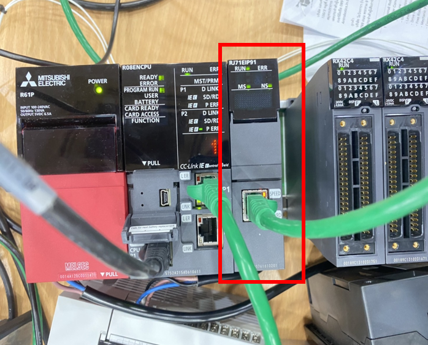
【初期IPアドレス・設定値】
| 機器名 | デフォルトIP | 設定ネットワーク |
|---|---|---|
| 三菱PLC (Master) | 11.11.11.1 | CC-Link IE TSN ネットワーク (サブネット: 255.255.255.0) |
| UR20-PN-FSCC | 11.11.11.2 |
1. 使用部品構成
1.1 使用製品
本説明では、下記のマスタ機器および関連機器を使用しています。
【ハードウェア】
- CPU
R08ENCPU - EtherNet/IPマスタ
RJ71EIP91
【ソフトウェア】
- GX-Works3
1.115以降
※バージョン1.115V以前のGX Works3を使用した場合は、動作保証がございません。
2. 操作手順
- 左クリックすると、ウィンドウが表示されます。
- 「Basic Setting」をクリックします。
- IPアドレスを入力して、RJ71EIP91カードの設定を行います。
- 「Check」をクリックします。
- 「EtherNet/IP」をダブルクリックします。
GX-Works3
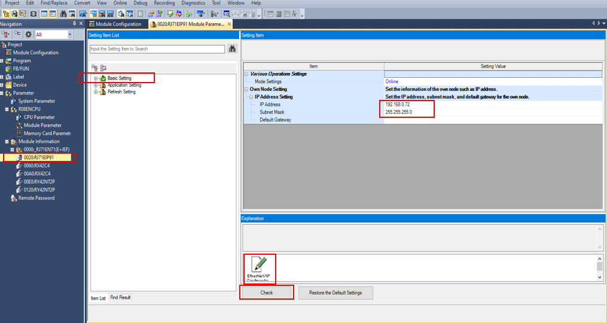
- 「EtherNet/IP Configuration Tool for RJ71EIP91」の画面が表示されます
- 手順5で設定した機器のIPアドレスを入力し、「OK」をクリックします
EIP configration Tool
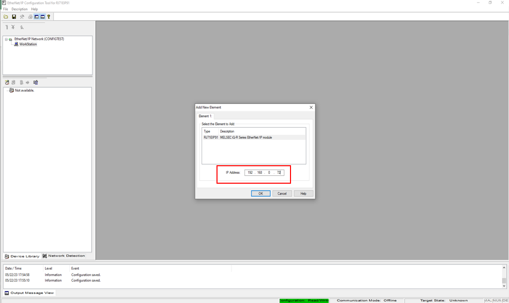
- 「Library」をクリックし、「Add」をクリックします
EIP configration Tool
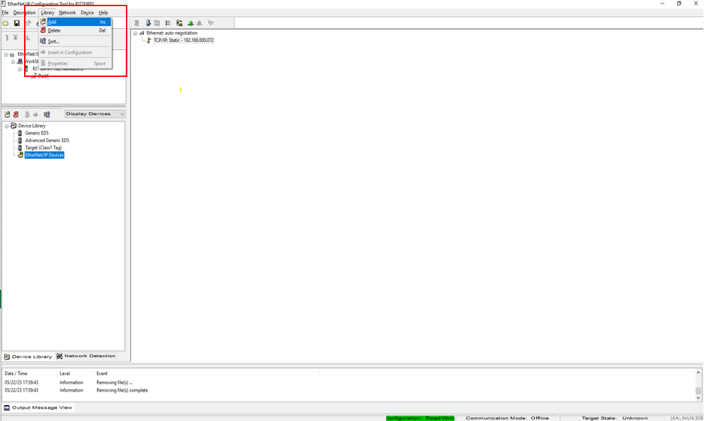
- ウィンドウが表示されるので、「Next」をクリック → 「Browse」でEDSファイルを選択 → 「Next」→「Next」→「Finish」をクリックします。
EIP configuration Tool
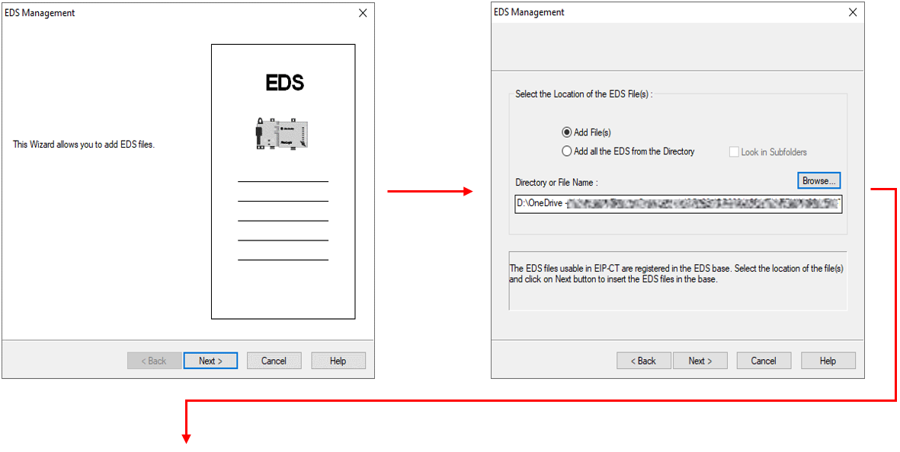
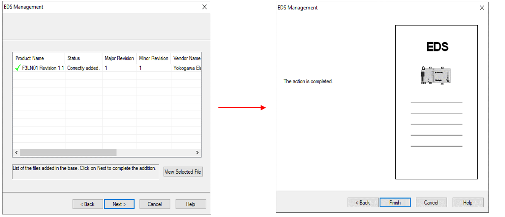
- EDSファイルのデバイスが追加されていることを確認できます → （B）を（A）の位置にドラッグ＆ドロップしてください
EIP configration Tool
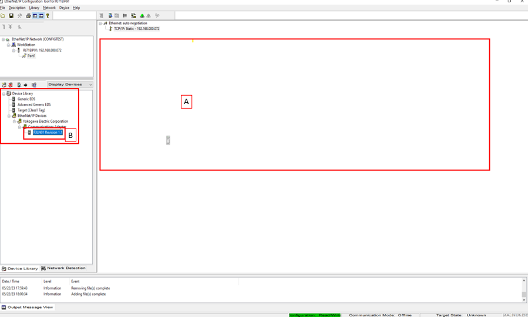
- ウィンドウが表示されるので、リンクする機器のIPアドレスに変更します（例：テストではPLC YokoのIP 192.168.0.112）
- 「Connections」をクリックします
EIP configration Tool
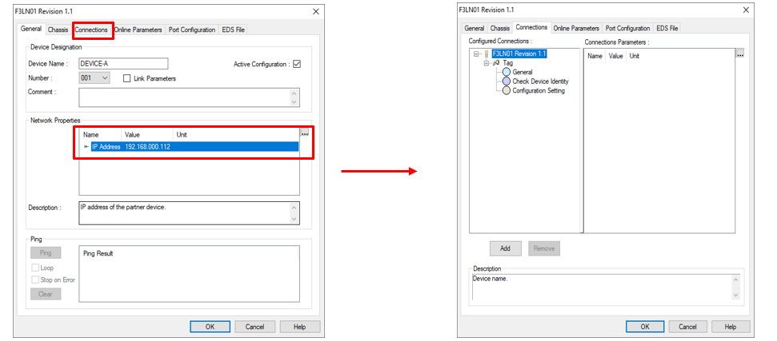
- 「Remove（Tag）」をクリックして削除します
- 「Add」をクリックし、「ID」を選択します
- 「Multicast」から「Point to Point」に変更します
- 「Configuration Setting」をクリックし、IDの値が接続先機器と一致しているか確認して、「OK」をクリックします
EIP configration Tool
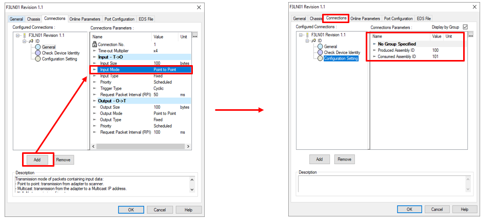
- 「Online」をクリックします
- その下の赤枠箇所をダブルクリックします
- 「「Test Ping」をクリックし、「見つかりました（接続確認）」と表示されたら「OK」をクリックします
EIP configration Tool
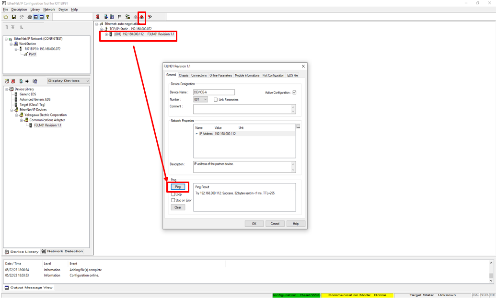
- 「File」→「Download」をクリックします
EIP configration Tool
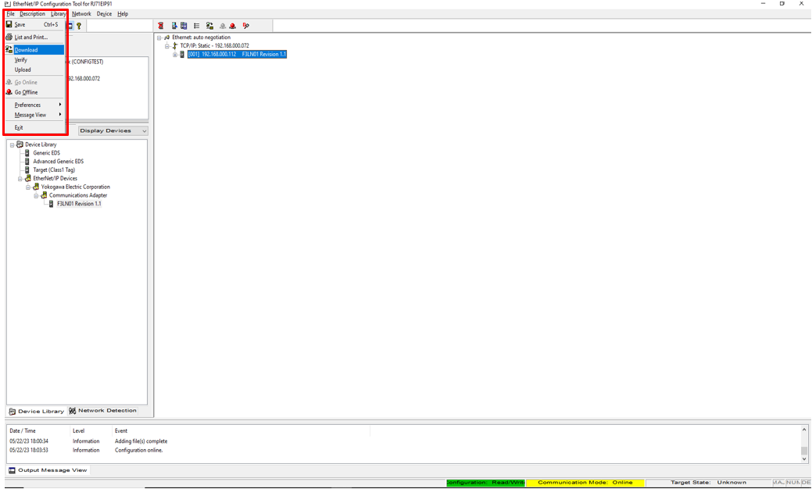
- ウィンドウが表示されるので、チェックを入れ → 「Download」→「OK」をクリックします
EIP configration Tool
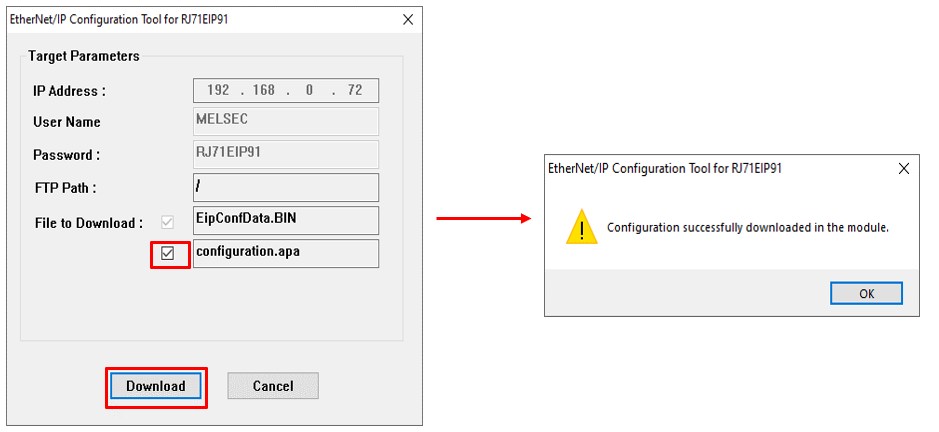
- その後、GX Works3でダウンロードを行い、PLCを再起動(本体レバーにて再起動)してください
- Y10をONにしてEtherNet/IPを起動します（例では、デバイスの開始XYが0020の先頭ビットとなっているため、Y10はY30の位置に割り当てられます）
EIP configration Tool
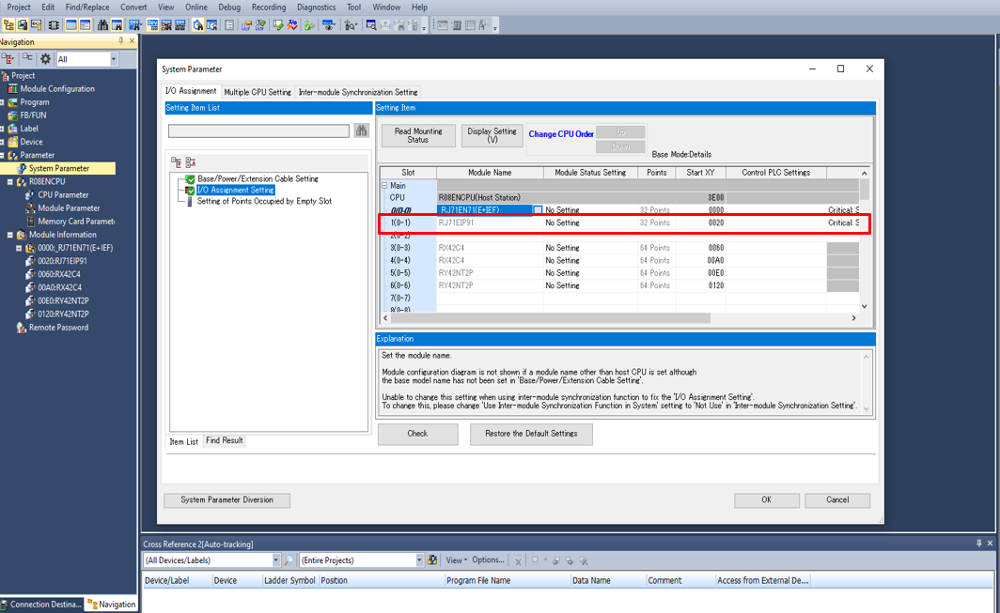
以下追記予定・・・